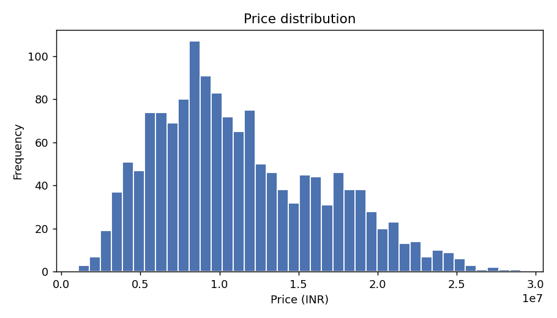
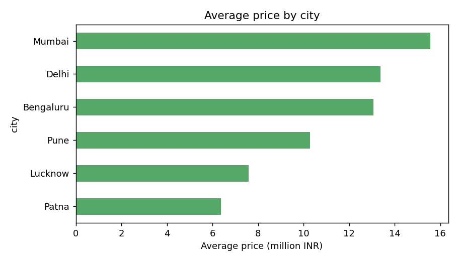
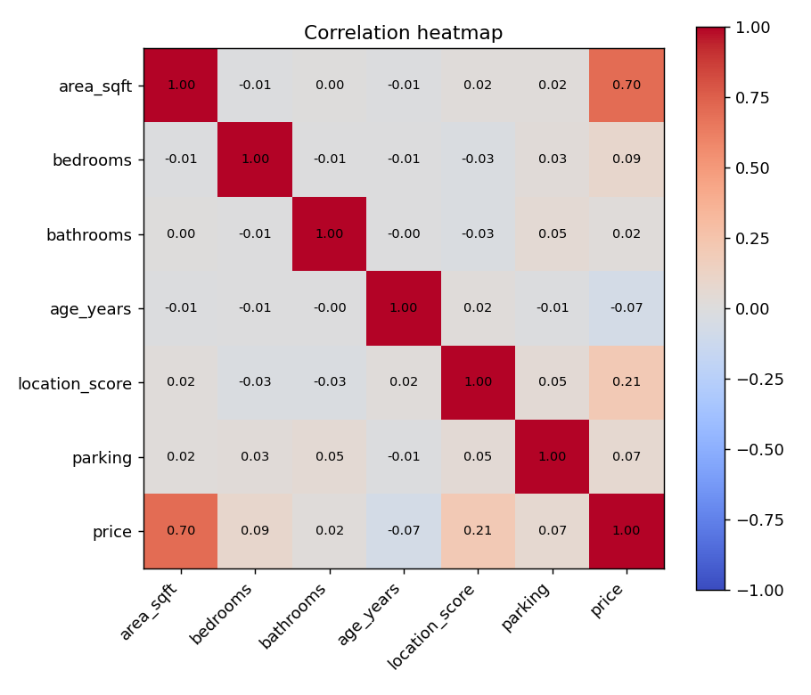
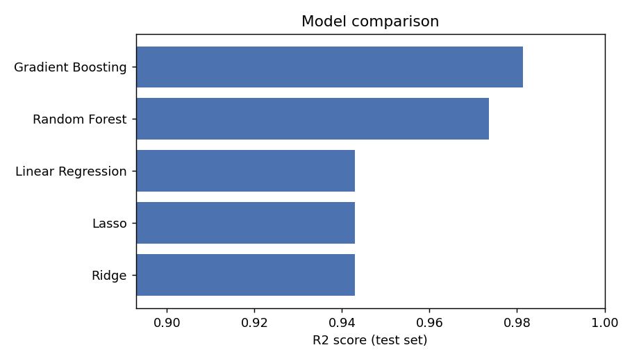
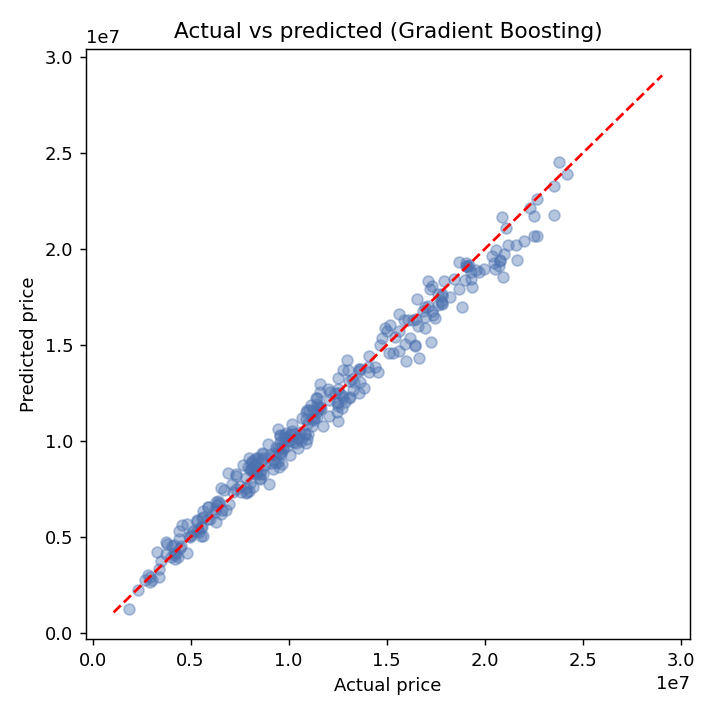
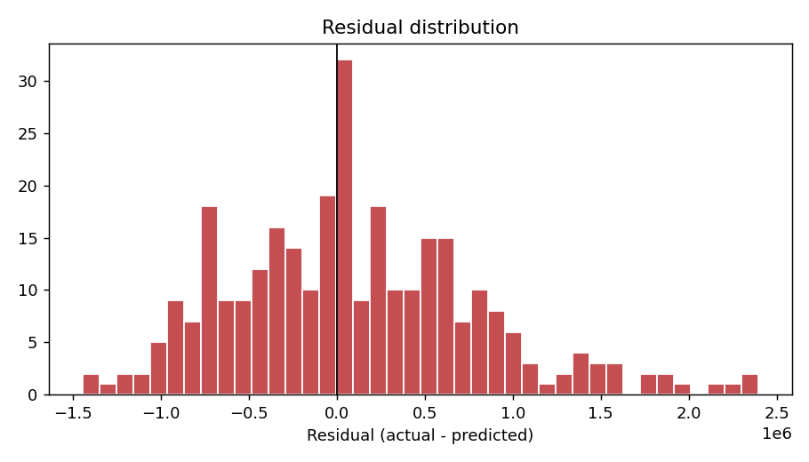
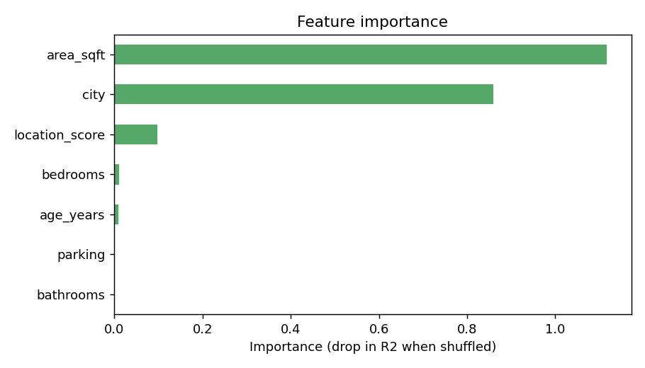

Submitted by Harsh Sinha | Haldia Institute of Technology
Buying or selling a house is one of the biggest financial decisions most people make, and the price depends on many factors at once. This project uses data analytics and machine learning to estimate the price of a house from its basic details such as city, area, number of rooms, age and location quality. The final model is wrapped in a small web application so anyone can try it without writing code.
To clean and explore a housing dataset, find which factors affect price the most, train and compare several regression models, pick the best one, and deploy it as a simple web app with a Flask backend.
The dataset has 1500 records with the columns city, area_sqft, bedrooms, bathrooms, age_years, location_score, parking and price (target). It is generated by data/generate_data.py with realistic price patterns and a few deliberately missing values, so the same code also works on a real dataset with the same columns. The data was split into 1200 training rows and 300 test rows.
Python, Pandas and NumPy for data handling, Matplotlib for charts, Scikit-learn for modelling, Joblib for saving the model, Flask for the backend, HTML/CSS/JavaScript for the frontend, and Jupyter Notebook for the analysis. AI-assisted coding tools were used to speed up development and debugging.
Data cleaning: duplicate rows were dropped, missing numeric values were filled with the median and missing city values with the most common city. Exploration: price distribution, average price by city and a correlation heatmap were studied. Preprocessing: numeric columns were standardised and the city column was one-hot encoded inside a single Scikit-learn pipeline, so the same steps run during prediction. Modelling: Linear Regression, Ridge, Lasso, Random Forest and Gradient Boosting were trained and compared using R2, MAE, RMSE and 5-fold cross-validation.



Gradient Boosting gave the best cross-validated score and was selected as the final model. On the unseen test set it reached an R2 of 0.9814, a mean absolute error of about Rs 551,906 and an RMSE of about Rs 715,974. The most influential features were area_sqft, city, location_score.
| Model | R2 (test) | CV R2 | MAE | RMSE |
|---|---|---|---|---|
| Gradient Boosting | 0.9814 | 0.961 | 551,906 | 715,974 |
| Random Forest | 0.9735 | 0.9506 | 630,541 | 854,639 |
| Linear Regression | 0.9429 | 0.9224 | 961,331 | 1,254,247 |
| Lasso | 0.9429 | 0.9224 | 961,331 | 1,254,247 |
| Ridge | 0.9429 | 0.9224 | 961,734 | 1,254,078 |




The project shows the full workflow of a small analytics problem: cleaning, exploring, modelling, comparing and deploying. The model predicts prices well on this dataset. Because the data is synthetic, the scores will be lower on real market data, where more factors such as locality, builder and market trends matter.
Use a real-world dataset, add more features such as locality and furnishing, tune hyperparameters with GridSearchCV, and deploy the app on a cloud platform.